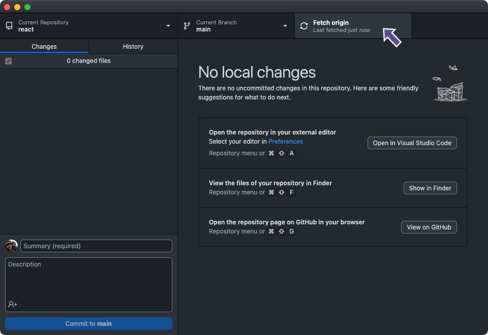
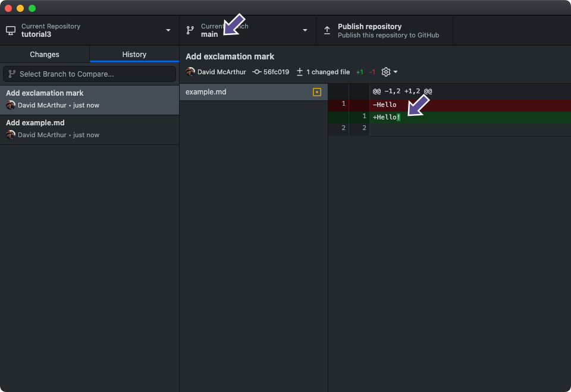

git clone <address>Collaborative Coding 2
This week’s material is based on the Version Control Course from the School of Mathematics and Statistics from the University of Glasgow. The content has been reduced to fit the class structure. However, we do encourage you to take a look and attempt the full course. Please get in touch if you would like to get access the full course.
1 Add collaborator
To collaborate with users in a repository that belongs to your personal account on GitHub.com, you can invite the users as collaborators.
2 Clone
One way to download a project to your computer is to use Git’s clone method. To use clone, we need to tell Git installed on our computer to make a copy (or ‘clone’) of another repository, in this case from GitHub.
Clone is a Git feature that allows a user to make a copy of a repository, including all the associated metadata on their computer so they can work on it. This is an essential feature and makes sense for a team of collaborators, with read-and-write privileges to the repository, all working on a project together.
First, we need to copy the address of the repository we want to clone.

Click on the green button labelled “Code”
Choose either HTTPS or SSH, depending on how you connect to GitHub with Git on your computer (see the Configuration section of Unit 1)
Copy the address
Then in your terminal, navigate to your desired folder and issue the following command:
You should now see the repository has been cloned to your computer.
First, navigate to the repository you want to clone on the GitHub website.

Click on the green button labelled ‘Code’
Click on ‘Open with GitHub Desktop’
You should then see a window like this pop up in GitHub Desktop:

The URL of the repository on GitHub has automatically been populated
Choose where you would like the repository to be cloned to on your computer
Click ‘Clone’
Using this approach, we have a copy of the files and folders in the repository, but we have also copied the metadata which makes this into a Git repository. To answer the example above, now if a project maintainer makes an update to the project on GitHub, we can easily sync both versions:
In the project folder just issue the pull command:
git pullOn GitHub Desktop, click the ‘Fetch origin’ button in the top bar:

3 Branching and branching strategies
3.1 Introduction
Typically a project will have one main direction of development— to reach a predetermined goal, such as a fully working prototype or to complete a course assessment. When Git uses the analogy of a tree (with branches), this main direction could be thought of as the ‘trunk’ of your development flow.
So far, we have only committed changes to one branch, the default branch called main, which, in our tree analogy, can be thought of as the trunk. If you are working on your own, or with a small group and you are not all committing changes at the same time, this can be a valid approach and avoids a lot of complexity in using Git.
Branches allow you to ‘branch off’ from the trunk in a new direction, which we may then add back to our trunk at a later time (see next paragraph). On this new branch, you can experiment with new ideas or work away in isolation, committing to Git and pushing your changes to GitHub, safe in the knowledge that nothing you do will affect the main direction of development. Likewise, the main direction of development on main can carry on in parallel with its own changes, and these will not affect your isolated branch.
It’s possible to merge the changes made in a branch, into another branch (usually the main branch). For example, if you created a branch to try out an experiment and the experiment was a success, Git enables you to merge those changes back into the main branch, or main direction of development, then you can delete your branch as it’s no longer needed. Or, if the experiment failed, you can leave the branch and never speak of it again, although it will still be stored if you decide later it is a good idea after all, or you can safely delete the branch.
Similarly, you can merge the changes from`main into your branch. This is useful if, for example, main has had updates made to it since you ‘branched off’, and you would like to see these updates in your branch.
Git offers another method to merge branches called rebase, which is why the Git term for merging branches is integration as this covers both methods. Although rebase has some advantages, you can risk losing work when using it, so it won’t be covered in this course.
3.2 Motivation
3.2.1 Working with other people
Branches enable a team to work on the same files at the same time. However, it doesn’t work like other collaboration tools like Google Docs or Microsoft 365, where you can see other users editing parts of a file as you work. Instead, branches allow collaborators to work in isolation, not worrying about what others are up to, and when the time comes to integrate changes into the default branch, Git provides the tools to ensure you don’t overwrite someone else’s work (or, if you do, you do it very intentionally!).
3.2.2 Grouping commits
Even if you’re working on your own, branches can be used as a tool to group multiple commits. For example, when working on a new feature for a project, you can create a branch named after your feature, then continue to use Git best practices by breaking your task into small manageable chunks, and complete one thing at a time and commit it. Then when it comes time to integrate your changes to the main branch, you can choose to “squash” those small commits down into one “merge commit” named after your new feature. This helps to keep the commit history on the default branch minimal and tidy, only showing completed tasks such as new features and bug fixes.
4 Branching and integrating
This week we are going to learn how to create a branch and make changes to it, then integrate this branch back into the main branch. This is particularly helpful when working collaboratively.
In Git, a branch represents a distinct version of the main repository, serving as a snapshot of your changes. When implementing new features or addressing issues, regardless of their scope, creating a new branch is the practice to isolate your modifications. This approach enhances code stability in the main branch and affords you the opportunity to refine your history before merging it into the primary codebase.
When the work is complete, a branch can be merged with the main project. You can even switch between branches and work on different projects without them interfering with each other.
We are also going to learn about Git’s stash feature, and how it can help you when switching between branches.
4.1 Create a new local Git repository
Let’s create a new folder on our computer called ‘tutorial3’ and initialise Git:
Create a directory for your ‘tutorial3’ work:
mkdir tutorial3
cd tutorial3and run git init inside:
git init
Initialized empty Git repository in /Users/staff/Work/tutorial3/.git/
Choose File > New Repository... from the menu.
In the “Create a New Repository” form, name the repository “tutorial3”, set the “Local Path” field to your preferred location and click the “Create Repository” button:
Add the following file to the repository:
example.md
Hello
Then add and commit the file:
git add example.md
git commit -m "Add example.md"Next, let’s create a branch named shout based on this commit.
We can create a new branch and switch to it using the switch command with the -c flag:
git switch -c shout
Switched to a new branch 'shout'
Add an exclamation mark to the end of the word within the example.md file:
example.md
Hello!
Then commit the change:
git add example.md
git commit -m "Add exclamation mark"
[shout eed4222] Add exclamation mark
1 file changed, 1 insertion(+), 1 deletion(-)

Let’s take a quick look at the log:
git log --all --decorate --oneline --graph
* eed4222 (HEAD -> shout) Add exclamation mark
* 8f601cd (main) Add example.md
Now let’s try merging the branch back into the main branch. First, switch back to main:
git switch main
Switched to branch 'main'
(Note, we don’t include the -c flag as this branch already exists)
Then merge our shout branch into main:
git merge shout
Updating 8f601cd..eed4222
Fast-forward
example.md | 2 +-
1 file changed, 1 insertion(+), 1 deletion(-)
We can check that the version of our file in the main branch now has the exclamation mark:
cat example.md
Hello!

As the change is now reflected in our main branch, we can safely delete our shout branch:
git branch --delete shout
Deleted branch shout (was eed4222).
Simply right click on the shout branch here and select Delete
4.2 Switching branches with the help of Git stash
Given the example above, branching with Git appears straightforward. However, this is not always the case. Sometimes Git won’t let you switch branches. Let’s create a scenario where we see an error when switching branches, try to understand why Git is stopping us, and look at a simple universal solution.
Create and switch to a new branch called question:
git switch -c question
Switched to a new branch 'question'
From the main menu select Branch > New Branch and name the branch ‘question’:
Let’s make a change to the file by changing the exclamation mark to a question mark:
example.md
Hello?
Add the change to the stage and commit:
git add example.md
git commit -m "Change exclamation mark to question mark"[question 49806f4] Change exclamation mark to question mark
1 file changed, 1 insertion(+), 1 deletion(-)
Now let’s make another change to our file:
example.md
Hello?
Is it me you’re looking for?
This time, instead of committing, we will try to switch back to the main branch, and Git will tell us we can’t switch branches currently as we would lose our local changes (see the next example for the error). Committing our latest change would let us then switch the branch, but what if we don’t want to commit the change?
A common scenario is that you have started working on a problem, then when you check Git you realise you are working on the wrong branch, but now you have uncommitted changes and can’t switch branches. For this scenario, there is the stash. Think of it as a clipboard with cut-and-paste functionality like you would have in a text editor, which will let us ‘cut’ our changes and store them somewhere safe, let us switch branches, and then paste them.
Let’s try it now:
git switch main
error: Your local changes to the following files would be overwritten by checkout:
example.md
Please commit your changes or stash them before you switch branches.
Aborting
Git complains that we will lose our local changes. Let’s try out the stash:
git stash
Saved working directory and index state WIP on question: 49806f4 Change exclamation mark to question mark
Git has used the abbreviation ‘WIP’ which stands for ‘Work In Progress’.
Now if we look at our file we’ll see the 2nd line has disappeared:
cat example.md
Hello?
We can ask Git to show us our stash:
git stash show
example.md | 2 ++
1 file changed, 2 insertions(+)
This shows us which files have changed. We can add a -p (for ‘patch’) flag which will show us a diff:
git stash show -p
diff --git a/example.md b/example.md
index ebbc6cd..472b4c5 100644
--- a/example.md
+++ b/example.md
@@ -1,2 +1,4 @@
Hello?
+Is it me you're looking for?
+Now our local copy is ‘clean’ and we can safely switch branches:
git switch mainSwitched to branch 'main'And we can apply our change to a different branch:
git stash apply
Auto-merging example.md
On branch main
Changes not staged for commit:
(use "git add <file>..." to update what will be committed)
(use "git restore <file>..." to discard changes in working directory)
modified: example.md
no changes added to commit (use "git add" and/or "git commit -a")
And now if we look at the file, we’ll see our stashed change has been applied, but there is no question mark on “Hello?” as this change still resides on the question branch:
cat example.md
Hello!
Is it me you're looking for?
We can now safely remove our stashed version:
git stash drop
Dropped refs/stash@{0} (00b8825ce0b6a0e3c2877f3c42c828fb4da4c922)
It’s important to drop the stash afterwards, or you’ll end up with several items in the stash that could lead to applying the wrong one. Git has a shortcut for ‘apply then drop’ which is git stash pop.
Luckily for GitHub Desktop users, this stashing and stash-applying process is all handled by clicking a button.
Once we try to switch to the main branch:
GitHub Desktop offers us two options:
Leave my changes on question allows us to stash the changes and come back to the branch later and apply the stash
Bring my changes to main automates the process of stashing the changes, switching to the desired branch, and applying the stash.
For this tutorial, we will choose the latter option— ‘Bring my changes to main’:
And now if we look at the file, we’ll see our stashed change has been applied, but no question mark as this change still resides on the question branch:
Let’s stage and commit our 2nd line:
git add example.mdgit commit -m "Add 2nd line"
[main 6859b82] Add 2nd line
1 file changed, 2 insertions(+)Let’s merge in the question mark.
git merge question
Auto-merging example.md
Merge made by the 'ort' strategy.
example.md | 2 +-
1 file changed, 1 insertion(+), 1 deletion(-)

Let’s check the file:
cat example.md
Hello?
Is it me you're looking for?
4.3 Merge conflicts
In the examples above we have introduced create a branch, making some changes and then integrating this back into main. However, what happens if you make a change to a line in a file on one branch, then you (or someone else) changes the same line of the same file on a different branch, what should Git do when you want to merge? This is a so-called merge conflict.
In this section, we’re going to create a simple scenario where we will run into merge conflicts and explore two different ways to resolve them.
When using merge to combine two branches, Git will first find a common “base commit” between the two branches, then compare the changes since this commit and attempt to compile a change list known as a “merge commit”.
Git tries to automate this process as much as possible, but if it finds two conflicting changes it won’t try to guess which change should overrule the other. This usually happens when the same line in a file has been changed in both branches. In this case, while attempting to compile the merge commit, Git will go into a “merge conflict” state, which involves updating the conflicting files in the filesystem (or “working tree”) with some special formatting to show you what it cannot guess, and Git will not allow you to commit the merge until you have manually decided what you want to happen.
Let’s create a branch named capitalise and switch to it:
git switch -c capitaliseSwitched to a new branch 'capitalise'
Now we’re going to make a different change to the file on the main branch. This time change the contents to the following:
example.md
HELLO
Then commit the change:
git add example.md
git commit -m "Capitalise example.md"[capitalise 3da9dfb] Capitalise example.md
1 file changed, 1 insertion(+), 3 deletions(-)
Now switch back to the main branch:
git switch main
Switched to branch 'main'
The file should look like it did before the capitalisation, as that change is isolated on the capitalise branch:
cat example.mdHello?
Is it me you're looking for?Now we’re going to make a different change to the file on the main branch. This time change the contents to the following:
example.md
Hello.
Stage and commit the change:
git add example.md
git commit -m "Add full stop to end of the line in example.md"[main 7888fef] Add full stop to end of the line in example.md
1 file changed, 1 insertion(+), 3 deletions(-)
Let’s see what happens when we try to merge:
git merge capitaliseAuto-merging example.md
CONFLICT (content): Merge conflict in example.md
Automatic merge failed; fix conflicts and then commit the result.
Let’s see what happens when we try to merge:

Next, GitHub Desktop will tell you which files need attention, and instruct you to open them in your preferred code editor.
The Continue Merge button is disabled, as we need to resolve the conflicts in our files.
Let’s open up example.md in our preferred editor and see what is happening:
<<<<<<< HEAD
Hello.
=======
HELLO
>>>>>>> capitalise
Git has modified our file to delineate a change that it cannot merge. The line (or lines) between <<<<<<< and ====== here show what you already had (you can tell because HEAD points to your current branch). The line (or lines) between ======= and >>>>>>> is what was introduced by the other commit, in this case from the capitalise branch.
If this was a large file with multiple lines changed, Git will automatically merge the parts that it can, and will highlight the parts it can’t like this, and we will have to go through each conflict and manually resolve them.
Let’s have a look at Git’s status:
git status -v
On branch main
You have unmerged paths.
(fix conflicts and run "git commit")
(use "git merge --abort" to abort the merge)
Unmerged paths:
(use "git add <file>..." to mark resolution)
both modified: example.md
* Unmerged path example.md
no changes added to commit (use "git add" and/or "git commit -a")
Note that GitHub Desktop displays the conflict icon besides each file that needs attention:
Git’s method for displaying merge conflicts by modifying the source files makes it very straightforward for us to resolve, by just manually editing the files as we want. However Git knows that there is now a danger that you could commit this merge conflict syntax, and when working with code, this will almost certainly cause a syntax error and break your project. So Git tries to protect us against this by going into a “merge conflict” state, where it wants you to either resolve or abort this action before you do anything else.
Let’s manually edit our file to what we want, like a mixture of both changes:
example.md
HELLO.
Add the file to the stage to mark it as resolved:
git add example.mdWe can see Git is no longer in a merge conflict state:
git status -v
On branch main
All conflicts fixed but you are still merging.
(use "git commit" to conclude merge)
Changes to be committed:
modified: example.md
diff --git a/example.md b/example.md
index 8b94e8e..c886167 100644
--- a/example.md
+++ b/example.md
@@ -1,2 +1,2 @@
-Hello.
+HELLO.
Once the special <<<<<<<, ====== and >>>>>>> syntax is removed from our files, GitHub Desktop detects that our merge conflict has been resolved and allows us to ‘Continue Merge’:
And we can conclude the merge.
I use the --no-edit flag to tell Git to use the default message for a merge commit:
git commit --no-edit
[main fe2d762] Merge branch 'capitalise'
We have integrated our branch into the main branch and we can safely delete our short-lived branch capitalise:
git branch --delete capitaliseDeleted branch capitalise (was 3da9dfb).5 Code Review: A better approach to resolving merge conflicts
Although Git allows us to resolve a merge conflict as above, this is not considered the “best practice” way to achieve this result. We ended up with something different from both our branch contents and the main branch contents all in one merge conflict resolution, with no opportunity for oversight by someone else working on the project- i.e. we managed to skip the Code Review (aka. Pull Request) stage.
A Pull Request on GitHub should be thought of as a preparation and checking stage for a Git merge (or rebase) operation. GitHub needs a ‘base’ branch to ‘merge into’, usually main, and a ‘compare’ branch to ‘merge from’. If Git has indicated that a merge will result in a merge conflict, for the base branch as above, GitHub will not easily let you perform the merge process until this is fixed. So let’s see how this could have been done differently.
Let’s create a new branch called goodbye:
git switch -c goodbyeSwitched to a new branch 'goodbye'From the main menu select Branch > New Branch and name the branch ‘goodbye’:
Let’s update the file like so:
example.md
GOODBYE
And commit the change:
git add example.md
git commit -m "Change hello to goodbye in example.md"[goodbye 753e225] Change hello to goodbye in example.md
1 file changed, 1 insertion(+), 1 deletion(-)From the main menu select Branch > New Branch and name the branch ‘goodbye’:
Switch back to the main branch:
git switch mainSwitched to branch 'main'Make a change to the file on the main branch:
example.md
HELLO
And commit.
git commit -m "Remove full stop in example.md"[main 27c4cc0] Remove full stop in example.md
1 file changed, 1 insertion(+), 1 deletion(-)Then try to merge:
git merge goodbyeAuto-merging example.md
CONFLICT (content): Merge conflict in example.md
Automatic merge failed; fix conflicts and then commit the result.
And again we have a merge conflict. This time, let’s abort the merge:
git merge --abortNow switch back to the goodbye branch:
git switch goodbyeSwitched to branch 'goodbye'And merge main into our short-lived goodbye branch:
git merge mainAuto-merging example.md
CONFLICT (content): Merge conflict in example.md
Automatic merge failed; fix conflicts and then commit the result.
Now if we head to our preferred code editor, we have almost the same merge conflict to resolve (except HEAD is now our goodbye branch):
<<<<<<< HEAD
GOODBYE
=======
HELLO
>>>>>>> mainAnd we can manually resolve it as before, this time with some Beatles lyrics:
example.md
You say GOODBYE and I say HELLO
And add to mark the conflict resolved:
git add example.mdAnd commit the change.
git commit --no-edit[goodbye 34ca84f] Merge branch 'main' into goodbyeGitHub Desktop has automatically detected that our merge conflict has been resolved:
Note
And now our branch could be ready for Code Review on GitHub via a Pull Request (see Supplement). This makes sense when you are contributing to someone else’s project.
When we switch back to the main branch:
git switch mainSwitched to branch 'main'Our change can be merged without a conflict. We will use git squash in the next steps. Squashing allows you to combine multiple commits in your branch’s history into a single commit. This can help keep your repository’s history more readable and understandable.
“Fast-forward” in Git terms means an automatic merge, or in other words, our merge will not result in a conflict.
The goodbye branch has 2 commits, which we can see by asking git log to compare it to the main branch:
git log --oneline main..goodbye34ca84f Merge branch 'main' into goodbye
753e225 Change hello to goodbye in example.mdSince we resolved the merge conflict with Beatles lyrics when merging the main branch into the goodbye branch, neither of these commit messages does a good job describing what we are about to integrate into main. So instead of transferring both commits to the main ‘as is’, let’s ‘squash’ them into one:
git merge --squash goodbyeUpdating 27c4cc0..34ca84f
Fast-forward
Squash commit -- not updating HEAD
example.md | 2 +-
1 file changed, 1 insertion(+), 1 deletion(-)Then commit the squashed change with a more descriptive message:
git commit -m 'Change to Beatles lyrics'[main 08a1ff2] Change to Beatles lyrics
1 file changed, 1 insertion(+), 1 deletion(-)
This time instead of clicking ‘Create a merge commit’, click the little arrow on the right of the button and select ‘Squash and merge’:
Now if we look at the history tab we can see a commit with the message ‘Squashed commit of the following:’. If you click on ‘Expand’ on the right, we can see the description of the commit has a log of the commits that were squashed into this one:
Let’s change the title to something more descriptive by right-clicking on the commit message and selecting ‘Amend commit…’:
Then change the message to ‘Change to Beatles lyrics’ and click ‘Amend last commit’:
“Fast-forward” in Git terms means an automatic merge, or in other words, our merge will not result in a conflict.
Finally, you can safely delete the goodbye branch:
git branch --delete goodbyeerror: The branch 'goodbye' is not fully merged.
If you are sure you want to delete it, run 'git branch -D goodbye'.
So to recap, we have prepared our branch for integration by first combining any new changes from the main branch into our branch and resolving the merge conflicts in isolation, creating a “final version” of the change we want to make with our branch ready to be checked, before attempting to integrate our branch back into the main branch.
If you need to keep your short-lived branch open for some reason, it’s advised to merge any recent changes from main into your branch often, to avoid painful merge conflicts later.
6 Supplement: Create a Pull Request to an existing project
This tutorial is about contributing to someone else’s project. The sample project that we are going to contribute to can be found here:
https://github.com/UofGAnalyticsData/tutorial2
We’re simply going to add a line to the existing readme.md file, but you may have found a bug, or thought of a new feature, in someone else’s project, and you’ve taken it upon yourself to contribute and submit it to the project maintainer for approval.
In Git terms, what you need to do is:
- Fork the project on GitHub to your account
- Clone it to your local machine
- Make the change
- Stage, commit and push the change to GitHub
- Create a Pull Request on the original project which points to your forked repository
- Code review: the project maintainer will review your change to decide if they want to integrate it, close it, or request modifications
Note
What is the difference between Clone and Fork?
Clone is a Git feature that allows a user to make a copy of a repository, including all the associated metadata on their computer so they can work on it. This is an essential feature and makes sense for a team of collaborators, with read-and-write privileges to the repository, all working on a project together.
If you have read privileges but not write privileges to a repository, like for example an open-source GitHub project where you’re not a project maintainer like the React repository we explored above, it’s easy to consume open-source projects but difficult to contribute to them.
Fork is a GitHub feature aimed at making it easier to be part of the open-source community. When you fork a repository, you make a copy of a repository, including all the associated metadata, but crucially, you become the owner of the new copied repository, and you now have read and write privileges necessary to make changes.
If you would like to contribute your changes back to the original repository, you can create a Forked Pull Request (see the next section) which will notify the original project maintainers that you are requesting to have your changes integrated with their project. Those maintainers reserve the right to approve, reject, or request changes to your Pull Request.
6.1 Fork
To fork a GitHub repository, first, click the Fork button on the top right:
Then you have the opportunity to give the forked repository a different name, description, and which branch to fork:
And that’s it! You have a copy of the project under your name on GitHub: 
6.2 Clone
Next, we’ll clone the project to our local machine:
- Click on the green button labelled “Code”
- Choose either HTTPS or SSH depending on your authentication setup and copy the URL Next, we can navigate to the folder we want and run the command:
git clone git@github.com:daviestar/tutorial2.git .Cloning into '.'...In GitHub Desktop, click on the ‘repository’ tab in the top-left of the window, then ‘Add’, then ‘Clone repository…’:
Choose the ‘URL’ tab and enter dmca-glasgow/tutorial2 into the ‘Repository URL’ input box, choose where you’d like to store the repository on your computer, then finally click ‘Clone’:
6.3 Make some changes
Let’s add a new line to the readme.md file, making sure to save it:
readme.md
## Follow along tutorial 2: Create a Pull Request to an existing project
My updated text.
6.4 Stage, commit and push the change to our repository
git add readme.md
git commit -m "added my updated text to readme"
git push[main 7d73c6c] added my updated text to readme
1 file changed, 2 insertions(+)
To github.com:daviestar/tutorial2.git
c9dfc4a..7d73c6c main -> mainIn GitHub Desktop, add a descriptive message and click ‘Commit to main’:
6.5 Create a Pull Request

- Navigate to the original project repository
- Click on the Pull Requests tab
- Click on the green button with the label “New pull request”
- Click “compare across forks”
- Select your repository from the “head” dropdown menu
- See your commit message!
- See the contents of your commit! Now you can click the green button with the label “Create pull request”.
Now you have the opportunity to rename your Pull Request and give it a description. When you’re ready, you can click the green button with the label “Create pull request”.
Note that you have the option to create a “Draft Pull Request”. This lets other users know that although you have opened a Pull Request, it’s not ready to review yet. This allows you the flexibility to set up the Pull Request before finalising the change. For example, you may want to make others aware that you are working on this particular change so they don’t start working on it too.
The “Draft Pull Request” feature is unfortunately only available on public repositories and some enterprise accounts. If you were hoping to use this workflow in a private repository, another convention is to put “WIP” (Work In Progress) at the top of your Pull Request description.
Now we can see our Pull Request has been created. At this point, the project maintainers will be notified. There’s nothing else we can do now, as we don’t have permission to integrate this change ourselves, but we will be notified if there is any activity on the Pull Request.
6.6 Code review
The Pull Request page we have just created is where a project maintainer will perform a code review. As an extreme example, the reviewer has a duty to at least ensure someone isn’t submitting a virus to their project, so your code will be read and reviewed.
For the reviewer, this is a whole topic (or even course) on its own as Code Review can be such a powerful process. At its best, it can be an opportunity to spread knowledge and build relationships in a team while keeping the codebase standardised and robust. It’s just simply a good idea to have a 2nd set of eyes look over your code offering constructive criticism.
Data Analysis Week 9 - Collaborative Coding 2 Data Analysis Week 9 - Collaborative Coding 2 Data Analysis Week 9 - Collaborative Coding 2 Data Analysis Week 9